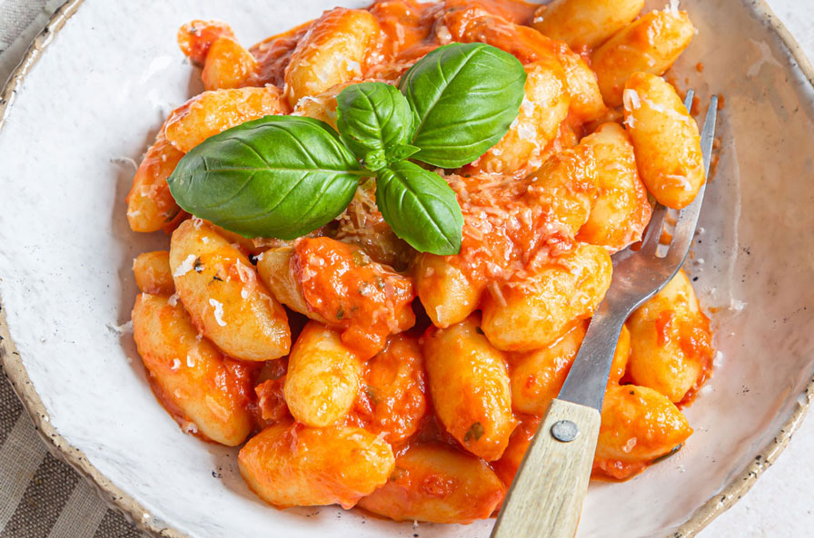

Bolognesa Gnocchis Recipe

Description of the recipe
Gnocchi Bolognese is a traditional Italian recipe that brings together soft, pillowy gnocchi with a rich and savory Bolognese sauce.
The gnocchi are prepared from a simple dough of milk, butter, flour, and eggs, left to rest, then shaped and cooked until they float.
Once ready, they are gently coated in a flavorful meat sauce without stirring, ensuring they stay intact.
The result is a comforting and satisfying dish with a perfect balance of tender gnocchi and a robust, homemade Bolognese.
Ingredients
- 5 Eggs
- 1L Milk
- 500G Butter
- Flour equal of the milk cups
Step by Step
- Add the milk to the pot cup by cup along with half of the butter.
- When the milk is boiling and the butter has dissolved, turn off the heat and add flour.
The flour must be added by cups, and the number of cups of flour
should equal the number of cups of milk.
- Once the flour has been added, stir until it forms a dough.
- With the dough ready, turn the heat back on and cook it.
When it becomes compact, turn off the heat and let it cool for 5 minutes.
- After 5 minutes, add two eggs at a time and stir until the egg is absorbed by the dough.
Repeat this step until 5 eggs have been added.
- Then cook the dough in a pan over low heat with a little butter.
Make sure to cook it in small portions and add more butter as needed.
-
Let it rest for 12 hours on a board covered with a cloth.
- The next day, divide the dough into squares, knead each square and shape it into
cylinders of your preferred thickness. Finally, cut them to the desired size.
- Once all the dough is cut, cook it in boiling water.
You will see the dough float; remove it and add it to previously cooked Bolognese sauce.
- When adding the dough to the sauce,
do not stir with a spoon—only move the pot so the sauce covers the gnocchi.
- SERVE AND ENJOY!
Home